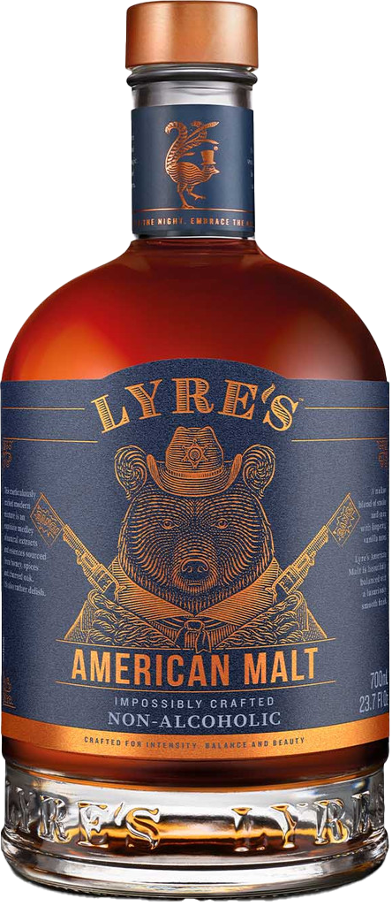

American Malt

This unique spirit has been impossibly crafted to capture the essence of a gently mellowed American Classic Bourbon Malt with flavours that are distinct and contemporary. Lyre's spirits have their own distinction as a premium, non-alcoholic beverage.
Flavour profile: Generous flavours of vanilla and toasted nuts with herbal notes providing a complexity, offset by a long, mellow finish.
- Herbs
- Toasted nuts
- Vanilla
How to enjoy
Enjoy with your favourite premium mixer such as cola. A natural for classic cocktails including the Old Fashioned or an excellent Boulevardier with Lyre's Aperitif Rosso and Lyre's Italian Orange. Libations!
Taste profile
To Taste: Generous flavours of vanilla and toasted nuts with herbal notes providing a complexity, offset by a long mellow finish. The gently spiced palate results in the flavours remaining well after finishing.
Bouquet: Honey notes, with scents of sweet spice and charred, cedary oak.
Instructions
Always reseal with original cap after opening. Do not leave bottle open or replace cap with pourer. Once open, best refrigerated for optimum freshness. Recommended to be consumed within 12 weeks of opening.
Ingredients
Water, Glucose Syrup, Sugar, Natural Flavouring, Acidity Regulator (Phosphoric Acid), Preservative: Potassium Sorbate, Stabiliser: Cellulose Gum (E466), Steviol Glycosides. **DAIRY FREE, NUT FREE, EGG FREE, GLUTEN FREE, VEGAN FRIENDLY.
| Sugar Contents: | 0.6g/30ml and 2g/100ml |
| Carbohydrate Contents: | 0.6g/30ml and 2g/100ml |
| Sodium: | 0.6g/30ml and 2g/100ml |
| Fat - Saturated: | 0.6g/30ml and 2g/100ml |
| Fat - Total: | 0.6g/30ml and 2g/100ml |
| Protein: | 0.6g/30ml and 2g/100ml |
| Energy: | 0.6g/30ml and 2g/100ml |